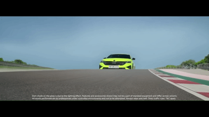
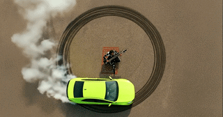
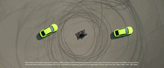
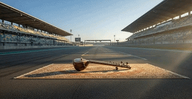
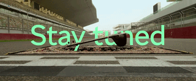
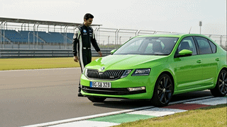
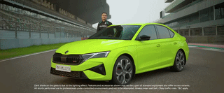

AI-Accelerated Film Pre-Production
Traditional pre-visualization for automotive campaigns is expensive and time-consuming — requiring 3D artists, renders, and multiple revision cycles before a single frame is approved. This project explores how generative AI tools can compress that timeline while expanding the creative possibility space.
By leveraging text-to-image and video synthesis models, the Skoda Octavia RS campaign pre-viz was produced in a fraction of the conventional timeline — enabling rapid iteration on mood, lighting, and composition at the concept stage.

AI Frames


Pre-Viz to Camera: The Comparison
Each AI-generated pre-viz clip was matched against the corresponding real camera take — revealing how closely the generative output guided on-set framing, lighting, and movement.






Outcome: The Gen AI pre-viz workflow reduced the concept-to-approval timeline significantly, enabling the creative team to explore more visual directions with less production overhead.